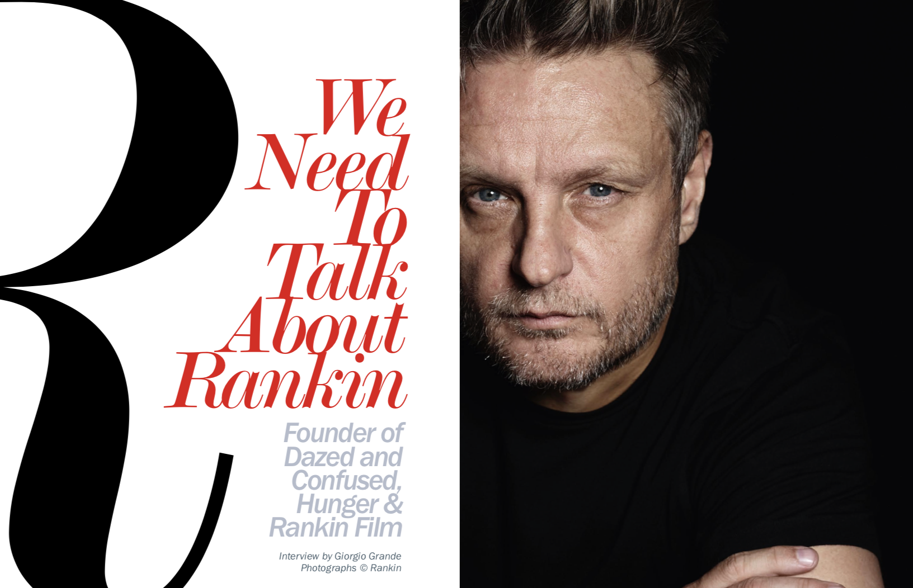

New to coding, I am an experienced writer with a specialism in creative content and copy. I am also a keen editor and having previously applied my analytical eye to the written word, I am now learning to do so with code. Therefore, I am learning a breadth of programming languages in order to fully compliment my profesional skill-set. I am doing so at Code Nation, Manchester, before embarking on a career as a QA Analyst, working with MPP Global.
A little about my background: perhaps unusual for a prospective developer; I have foundations in the fashion industry, working as a writer for various publications, including 160grams and Voir. I have had the opportunity to work at London Fashion Week, reviewing collections and even interviewing key figures like the esteemed photographer, Rankin. Following this, I also took the opportunity to work as a model, working for brands such as Toni & Guy, Babyliss Pro and Cindy Kihn.
It is an unusual, but rich foundation, equipping with me with a diversity of sector-knowledge, sharp visual intelligence and refined creative skills. These are all traits that I am eager to employ throughout my QA and developer career. I envision that one-day, I will be a talented full-stack developer, yet one who is able to create visually appealing content, while programming complicated code.
Having worked with HTML when creating web content as a writer, learning to code has represented an opportunity to advance my technical skillset, and through coding, I have been able to apply my logical, interpersonal and creative skills.